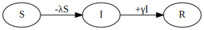

By Nathan Geffen, June to November 2022
There are numerous ways of modelling epidemics. We can broadly divide models into two types: macro and micro. Macro models are often also called compartmental or equation-based, while micro models are often called agent-based or individual-based simulations.
At the onset of the Covid pandemic, many websites explained how the simplest useful macro model, an SIR one (for Susceptible-Infectious-Recovered), worked. We start with that and then try to implement an equivalent micro model. We'll then discuss the differences between the two models and their consequences for understanding real-world epidemics. Then we'll implement models of HIV and Covid and then consider short-duration (as in a short period of infectiousness) infectious diseases more generally.
We start off with a very simple infectious disease. It has the following characteristics:
Note that no-one dies and there are no births or migration into or out of this population, at least for the duration that we will model this disease.
Characteristic 3 of our model is what's commonly called $\underline{R}_0$ in epidemiological literature. The real-world use of $\underline{R}_0$ is much more limited than is usually admitted but it's still useful.
We call our description above a model world. We can implement both a macro or a micro model version of it.
In this population we have people who are Susceptible to the infection, but not yet infected. There are infected people, and all infected people also Infectious. And we have Recovered people. That's three compartments: Susceptible, Infectious and Recovered, abbreviated as SIR.
We initialize our model so that nearly everyone in the population is uninfected and has never had the infection. In other words everyone is in the Susceptible compartment and a tiny number are in the Infectious compartment.
Let's assume the population size is 100. Then we'll set $S$, the number of people in the Susceptible compartment to 99 and $I$, the number of people in the Infectious compartment to 1. The number of people, $R$, in the Recovered compartment is 0. (Note we do not underline ${R}$, the number of recovered people, to differentiate it from $\underline{R}_0$, the number of people that each infectious person will infect when the epidemic is still very small. I wish this was a standard adopted throughout infectious disease literature.)
All the above is common to both the macro and micro models that we implement. Now let's describe specific details of our macro model:
We iteratively update the $S$, $I$ and $R$ compartments with the number of people who have moved between them. In our model each iteration represents a day in our infectious disease world. These equations describe what happens on each iteration:
Note that the number of people in our macro model compartments are continuous real numbers, not discrete. This is a big difference between our macro and micro models.
The number of people who become infected on each iteration, or day, of our model is a function of S, I and the risk of infection $\lambda$. Since all three of these variables change with time, we subscript them. This equation describes the flow from $S$ to $I$: \begin{equation} S_{t+1}=S_t - \lambda_t S_t \end{equation}
Since people mix homogenously, we have: \begin{equation} \lambda_t = \beta I_t \end{equation} where \begin{equation} \beta = {\underline{R} \over {ND}} \end{equation} where $N$ is the population size and $D$ is the average number of days a person is infected (5 in our model).
The other equations in the model are simple:
\begin{equation} I_{t+1}=I_t + \lambda_t S_t - rI_t \end{equation} \begin{equation} R_{t+1}=R_t + rI_t \end{equation} where $r$ is the rate of recovery per day, or $1/5$ in our model.
We can depict what happens on each time step (or day) graphically:

Here is a micro model for SIR
Let's get a bit more complicated. Here there's an exposure compartment before an infectious one.
Here is the highly cited Granich et al. model.
Here is a quick and dirty Covid-like-disease model.